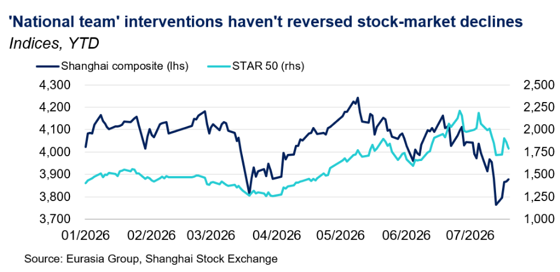
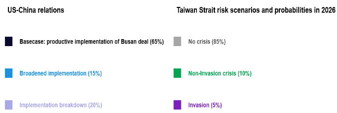

Technology
Chinese AI breakthroughs will spark model restrictions debate in Washington. On 11 July, Chinese AI startup Moonshot released Kimi K3, a new model that early benchmarks suggest performs close to leading US systems. In response, multiple US officials suggested that Kimi was developed through the theft of US intellectual property (see US-China section); this will add new urgency to discussions on potential responses.
- Chinese firms are no longer just lagging imitators. New releases from Moonshot and Zhipu suggest that Chinese developers can now approach leading US performance more quickly than before, especially in open-weight models. That reduces the time advantage US labs gain from frontier breakthroughs and weakens the assumption that the US can preserve a durable lead by having access to more advanced compute power.
- The emergence of Kimi raises questions over the factors that determine who leads on AI. Leading US labs have largely pursued frontier gains through scale, relying on more compute and larger general-purpose systems. Chinese firms have taken a more varied approach, including smaller and cheaper models, multimodal systems, and designs aimed at mass adoption. That strategy increasingly matters as these firms gain market share and practical influence without producing the single most advanced model.
- US policy may adapt to that shift. If model performance and diffusion matter more than raw chip access, Washington will face stronger pressure to target Chinese models directly through procurement rules and legal restrictions. Shifting the focus of regulation from semiconductors to models would mark a significant change in US technology strategy.
United States/China
Xi’s visit remains on track despite tough US rhetoric. US officials are becoming more vocal about allegations related to Chinese distillation efforts, election interference, and coercion in the Pacific but continued diplomatic engagements, including a 22 July meeting between Chinese Foreign Minister Wang Yi and US Secretary of State Marco Rubio, suggest the two sides continue to prioritize the planning of Xi’s visit in September.
- Wang–Rubio talks were cordial. China’s readout stated that the meeting was “pragmatic, positive, and constructive,” while Rubio said the two sides were laying the groundwork for a “very positive visit” by Xi. Chinese Foreign Vice Minister Ma Zhaoxu visited Washington and Miami this week likely to work out details.
- The tenor of US officials has soured on China, but risks will only rise if Washington follows through with action. President Donald Trump accused China of interfering in the 2020 US elections in a 16 July speech, Rubio warned of “new and coercive threats” in the South China Sea in a 21 July op-ed, and three senior US officials, including Treasury Secretary Scott Bessent, accused Chinese AI firm Moonshot of developing the Kimi K3 model through large-scale distillation “attacks” of US models on 22 July. Bessent suggested that sanctions and Entity List designations could be on the table. Beijing will only retaliate if concrete US actions follow.
- Progress on law enforcement cooperation creates positive optics for the summit. On 20 July, a Chinese suspect accused of kidnapping and murder in the Philippines was repatriated from the US to China. China’s Ministry of Public Security hailed the move as an “achievement” in implementing the consensus reached between the two leaders.
Economic Policy
Beijing intervenes to stabilize China’s stock market but has not stopped tech stock repricing. The “national team” has intervened before—most notably in 2015 and 2024—but this intervention is likely smaller and focused on stabilizing the strategic chip and AI industries. A global chip selloff and renewed Middle East conflict drove the Shanghai Composite down 5.8% over last week, while concern over CXMT’s IPO intensified pressure on the tech-focused STAR Market.
- In response, Beijing called upon the “national team,” including financial investors and non-financial state-owned enterprises (SOEs). On 19-20 July, China Reform, Chengtong, and China Life disclosed purchases of 70 billion yuan in central SOE stocks, tech stocks, and broad-based exchange-traded funds (ETFs), partly via the People’s Bank of China's share-buyback relending facility; PICC and Ping An pledged to follow. Central SOEs then bought their own shares. China Securities Regulatory Commission chairman Wu Qing separately vowed “all efforts” to maintain market stability.
- The intervention helped stabilize indices and stopped the immediate rout, but it has not ended the repricing of chip and AI shares. The STAR 50 rose 10.7% on 21 July, its largest single-day gain this year, led by semiconductor equipment names. Even so, it ended the session down 13.8% for the month and turned negative the next day.
- The Chinese Communist Party (CCP) Politburo meeting in the last week of July will indicate whether Beijing pairs market stabilization with broader support for growth and strategic technologies, although expectations remain focused on faster implementation of existing measures rather than new stimulus.

Taiwan
Additional TSMC investment promise will bolster Taipei’s efforts to shore up US support. Taiwan Semiconductor Manufacturing Company (TSMC) announced on 16 July a $100 billion investment in Arizona to build four semiconductor manufacturing facilities. This brings Taiwan’s total investment pledge in the US to $265 billion, surpassing the island’s $250 billion investment commitment announced in January by $15 billion. Taipei has leveraged TSMC’s expansion to open a trade office in Phoenix in early July to facilitate deeper tech cooperation with the US.
- Taipei wants to show that it is a reliable economic partner willing to support Trump’s efforts to bring more chip manufacturing to the US, particularly as Washington has prioritized stability with Beijing over support to Taiwan. TSMC’s increased investment will likely help the company secure more exemptions from future semiconductor tariffs. The US Section 232 investigations will likely conclude after the US midterms; we continue to expect the rate to land at 15% (see: Taiwan semiconductor deal offers little upside for other trade negotiations, 22 January 2026).
- The US chips supply chain will remain reliant on Taiwan. TSMC continues to regard Taiwan as its largest base and plans to build 13 leading-edge packaging fabs in Taiwan over the next several years. Taiwan will maintain its competitive edge by keeping the most advanced technology on the island.
- Eurasia Group contacts indicate Beijing is protesting Taiwan's new trade office in Phoenix in engagements with Washington, but China is unlikely to retaliate given the US’s continued delay of arms sales to Taiwan and anticipation of Xi's US visit in September.
Foreign Policy
South China Sea tensions will hang over China’s outreach to ASEAN. Wang met with counterparts from the Philippines, Australia, Canada, India, Malaysia, the US, and the EU on the sidelines of the ASEAN foreign ministers meeting in Manila on 21 July. The meeting with the Philippines’ foreign minister follows a clash between the Chinese coast guard and the Philippine navy around Second Thomas Shoal, marking a renewal of tensions following a truce reached between the two countries in 2024; a similar confrontation also occurred at the Scarborough Shoal.
- Beijing fears that Manila will use its assumption of the ASEAN chair this year to increase international criticism of China’s position and actions in the South China Sea. Wang blamed this week’s clash on US interference and domestic politics in the Philippines, warning that “countries outside the region” as well as “some people within the Philippines” seek to stir up trouble between Beijing and Manila.
- China-Philippines tensions will likely remain contained. Beijing hopes to avoid a conflict that could trigger US security commitments or upend the US-China truce, while Manila likely understands that its relations with Washington will strain if it is seen to be the aggressor.
- China’s behavior in the South China Sea will continue to undermine its effort to court ASEAN. According to surveys of ASEAN countries, US leadership under Trump overtook China’s aggressive behavior in the South China Sea as the top geopolitical concern in 2026, though nearly half of the region continues to express anxiety over Chinese actions.
Standing calls

Notes underpinning calls:
April summit will yield new purchase commitments and maintain truce, 5 February 2026
Latest dismissals deepen military turmoil and lower Taiwan risk, 26 January 2026
Upcoming Events
- Late July: Conclusion of US 301 investigations (Section 122 tariffs expire 24 July)
- Last week of July: CCP Politburo will discuss the economy
- Early August: CCP leadership will have its annual summer retreat at Beidaihe
- 12-13 September: BRICS Summit
- 24 September: Xi will likely visit the US
- 22-29 September: UN General Assembly high-level meetings
- 27 September: Six-month deadline for China’s trade investigations
- 1-7 October: China’s National Day/Golden Week
- 10 October: Taiwan’s National Day
- 21-23 October: Bund Summit in Shanghai (estimated dates)
- 10 November: End of one-year suspension of US–China tariffs, Bureau of Industry and Security 50% ruling, Chinese export controls, port fees
- 18–19 November: APEC summit in Shenzhen
- 28 November: Taiwan local elections
- 14–15 December: G20 leaders’ summit in Miami